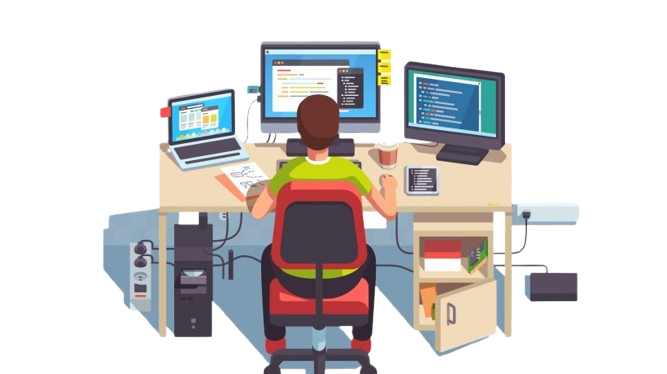
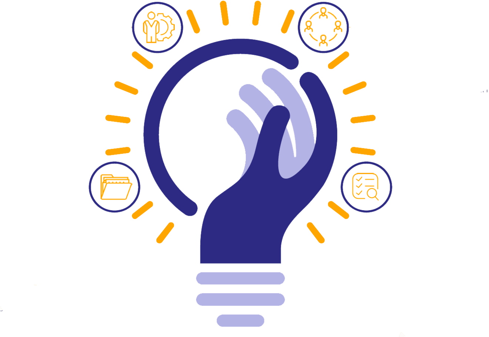

Hey there!
I have experience in many languages and am quick at picking up new languages. I am interested in developing software and websites that can range in complexity but ultimately is easy for anyone to intuitively use.
About Carolin

Languages
- Java
- JavaScript
- HTML/CSS
- C++
- C#
- Python

Leadership and Experience
- Summer 2024
- US AF Software Engineering Intern
- 2022 - 2024
- Community Services Assistant
- Present
- Club Archery at UGA Social Chair
- 2022
- Science Olympaid Outreach Event Supervisor
- Summer 2021
- Kroger Fuel Clerk
- Summer 2021
- Great Clips Receptionist
- 2017-2021
- Forsyth Community Peer Court Advocate

More About Me
I am a senior at UGA majoring in Computer Science and graduating in May 2025.
As an undergraduate, I have taken classes such as Java I, Software Development, Software Engineering, Web Development, and Cloud Computing. In addition, I hold certificates from Georgia Tech's Profressional Education Python I and Python II
My plans are to attend graduate school and finish by Spring 2027. With a Master's Degree in Computer Science, I plan to enter the workforce as a Fullstack Developer, a Software Developer, and a Web Developer.